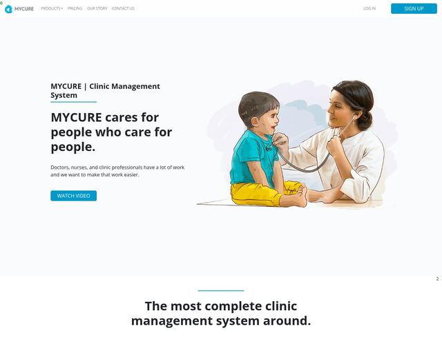
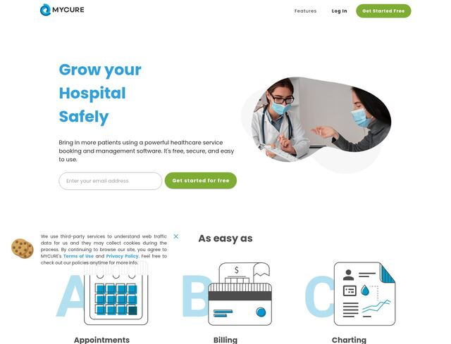
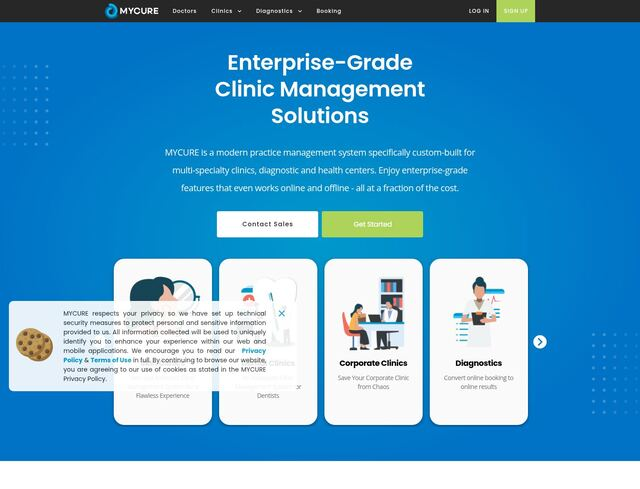
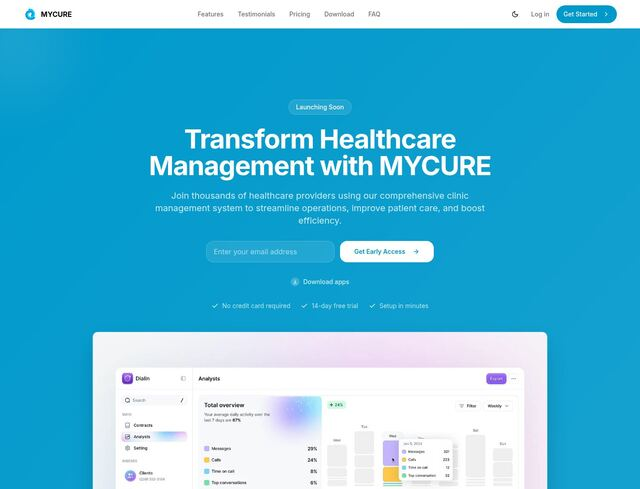
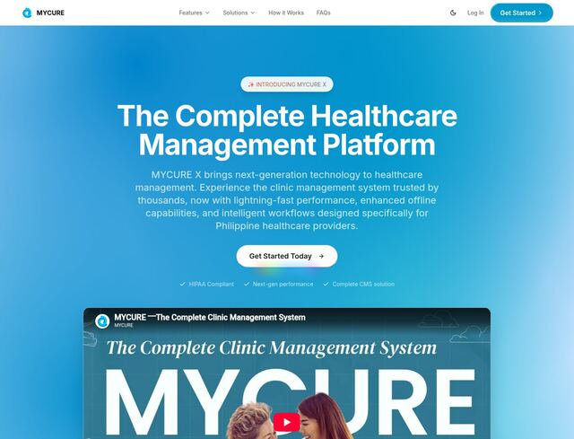
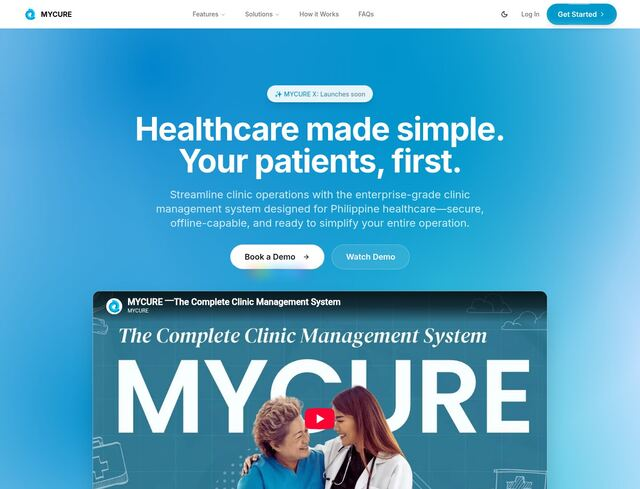

The original launch
Where it all began: a prerendered Vue site with coffee-named plans.
4 pages →
Product sites: CMS, HIS and Dental
"Enabling Heroes. Saving Lives." One site, three products.
5 pages →
Vue CLI and clinic-type sites
A rebuild on Vue CLI, organised by how doctors practise.
7 pages →
The first Nuxt site, through the pandemic
Server-rendered with Nuxt, and rebuilt for a world under lockdown.
6 pages →
Peso pricing panel
The last time MYCURE's plans were shown with fixed ₱ prices.
1 page →
Website v6.9: the illustrated landscape
A fresh Nuxt project with hand-drawn hills, heroes and a page for every product.
7 pages →
Enterprise-grade, still self-serve
Clinic overhaul, mobile overhaul, and the last days of online signup.
10 pages →
Website v8: talk to us first
Signup and pricing come down, Contact Us goes up.
9 pages →
Version 10: rebuilt on Next.js
One commit replaced six years of Vue with React.
2 pages →
Version 10, phase 2: product pages
Every product gets a page again, now with motion and dark mode.
12 pages →
Enterprise-first redesign
"Healthcare made simple. Your patients, first."
12 pages →
Today's website
"Run the clinic you've always envisioned."
12 pages →